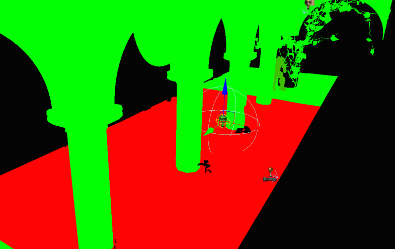

UDN
Search public documentation:
DominantLightsCH
English Translation
日本語訳
한국어
Interested in the Unreal Engine?
Visit the Unreal Technology site.
Looking for jobs and company info?
Check out the Epic games site.
Questions about support via UDN?
Contact the UDN Staff
日本語訳
한국어
Interested in the Unreal Engine?
Visit the Unreal Technology site.
Looking for jobs and company info?
Check out the Epic games site.
Questions about support via UDN?
Contact the UDN Staff
主光源
文档变更记录: 由 Daniel Wright 创建。
概述
版本
相关的技术博客文章
光源类型

影响静态环境的主光源
- 它允许动态阴影仅影响主光源。放入到光照贴图中的光源不能以这种方式来产生阴影，并且它仅能受到模块化阴影的影响。
- 它允许专门地存储来自主光源的直接阴影。直接阴影是最高频率的光照信息所在的地方，它在存储时的分辨率要比其它光照的分辨率高。我们也可以对阴影数据使用一种不同的表现法，目前所有的主光源类型使用距离场阴影 (DistanceFieldShadows)。
- 仅主光源的阴影是预计算的，所以其它的光源的影响是动态的。来自主光源的高光看上去和来自动态光源的高光一样，而不是放入到光照贴图中的光源所使用的光照贴图高光。由光源衰减所产生的梯度不会受到光照贴图压缩的影响。
影响光照环境的主光源
场景中显示了一个在静态环境上的具有距离阴影的主定向光源，同时在使用一个光照环境的人物上投射了动态的预计算阴影，并且在世界中人物的正常阴影和其预计算阴影相调和。


性能影响
请参阅 主光源 Xenon (DominantLightsXenon)获取针对 Xbox 360 的性能信息。
限制
主光源错误
- (地图检测错误)"地图有多个主光源在同时影响一个图元，这些主光源将在光照复杂性中显示为红色并且在游戏控制台上不能进行正确地渲染。
- 每个图元的光照结果错误"物体受到多个主光源的影响，每个图元最多仅能收到一个主光源的影响。" 点击跳转到 (Goto) 按钮将会跳转到发生错误的图元。
- 在光照复杂性视图模式下，仅具有一个动态光源/主光源的图元将显示为绿色。受到两个主光源影响的图元将会显示为红色，如下所示，红色的地面受到了一个主定向光源和选中的点光源的影响。
